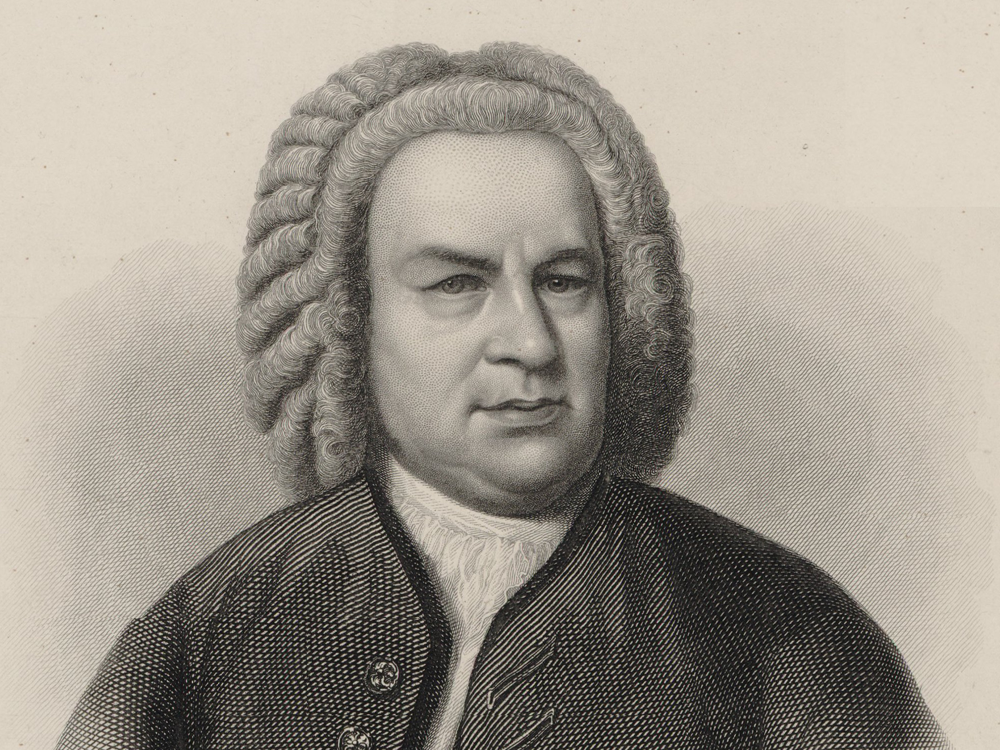
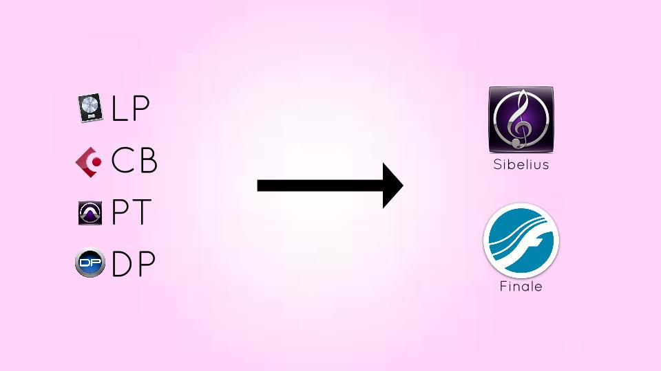
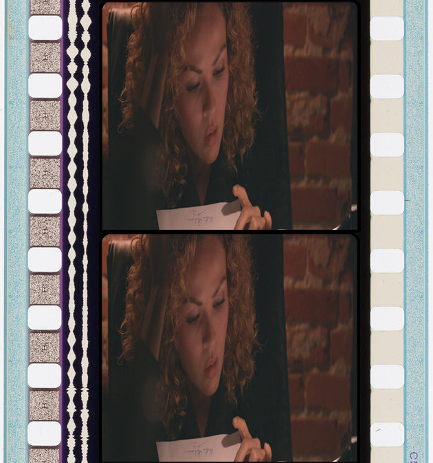
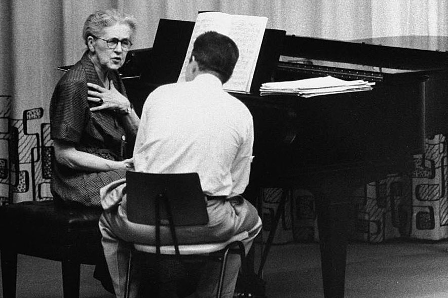
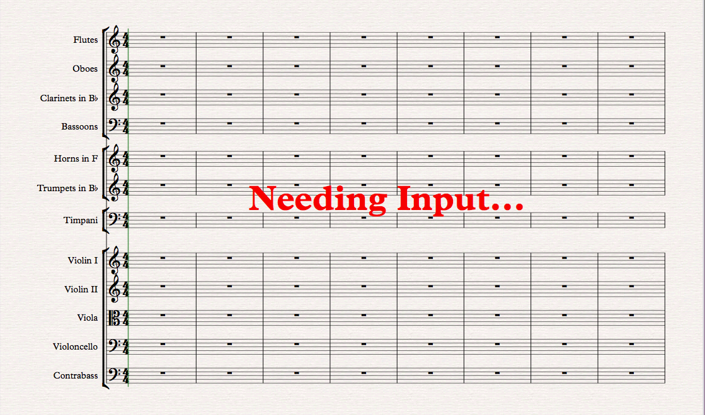
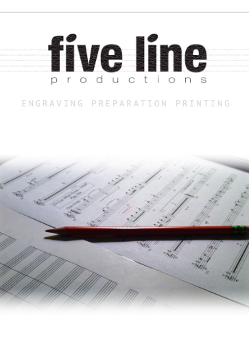

Subscribe
Welcome! Please look around, listen to music, browse blog entries, and get info on my latest projects and other events. Side note: I designed and coded this website from scratch...(a beast of a project. Audio player in the top left took forever to get functioning properly. It is functioning properly, right?) #AmateurWebmaster
Yet Another Upcoming Film
1 March, 2017
Great experience working on the music prep for Baywatch. Also went to one of the days of the recording session at the Eastwood Scoring Stage on the Warner Brothers lot. Nothing quite like the sound of a 75-piece orchestra in that space. Here is a pic from one of the days of recording. Kudos to Christopher Lennertz the composer and his team for writing such great music.
Another Upcoming Film
5 January, 2017
Just finished working on the music prep for Smurfs: Lost Village. There are some downright psychedelic moments in Christopher Lennertz's score. Awesome!
Upcoming Film
2 November, 2016
Excited to have co-orchestrated Alan Lazar's score for the upcoming film The Most Hated Woman in America. It was great working with Larry Rench, a class act and a brilliant orchestrator.
Album Release - "I Have Graven Thee"
1 November, 2015
So excited about this album release. I couldn't have done this one without the help of so many people. From the soloists Daniel Beck, Mindy Smoot Robbins, and David Matthew Smith, to Dan Smith for his support and for recommending the wonderful Lux Singers, to Jake Judd and Molly Cowley for their instrumental solos, to Stoker White and his mad engineering skills, to my sister Jessica who gave me valuable feedback on the script, and of course to my wife for her endless support and patience. It goes without saying that it is the Lord Jesus Christ that made this album a possibility. His sacrifice is an unfailing source of strength and hope. + Visit Site
IMDB
09 August, 2015
Didn't realize that IMDB had listed two of my compositions from a few years ago. One is for the animated short film "Suds" (view a short clip). I was fortunate to have the opportunity to write the music for the animated film produced each year by animation students at Columbia College Chicago. Christopher Marlowe and team did a fantastic job. It was also a treat to record the score at Capitol Studios with some of the finest engineers and musicians I've had the pleasure to work with. The other one is for a few cartoon episodes.
Contact@AdamCelaya.com
Adam currently lives in the greater LA area where he composes and orchestrates music for film and TV. He grew up on the peninsula just south of San Francisco and discovered a love for music listening to church hymns, pop music, and animated musicals. He studied voice and guitar before receiving his Bachelor’s in media music from BYU and then his Master’s in music composition for the screen from Columbia College Chicago, where he studied under former Disney VP of music production Andy Hill and Emmy-award winning composer Hummie Mann. He interned with composer/orchestrator J.A.C. Redford (Avatar, Skyfall, Saving Mr. Banks, Bridge of Spies). Adam has written music for commercials, cartoons, musicals, corporate campaigns, short films, and albums.
Subscribe
Bach Chorales: The Ballet of Music
30 August, 2016
In a recent lesson I was reminded that the best way to improve technique is by reviewing the basics. Just like all good dancers should study ballet, so too should all good composers study Bach. In particular the contrapuntal and harmonic technique demonstrated in his chorale harmonizations. It's actually pretty amazing how modern some of it sounds considering they were written several hundred years ago. As I've analyzed these, I've discovered the creativity he displayed within the stricter compositional rules of the time. It has also been instructive to realize that the harmonic movement of these pieces very much resembles the narrative arc of storytelling/filmmaking. The narrative arc of course comprises an introduction, rising action, climax, falling action, and a conclusion. So in these chorales the first thing Bach does is establish the home key (like the introduction), then he explores or moves away from the key (rising action), then his exploration reaches a peak or arrival (climax), then the harmony moves again, but instead of exploring it is resolving towards a final key (falling action), and eventually he arrives at the final or original key (conclusion).
Going from Midi Mockup to Notated Score
31 July, 2016
Some of my non-composer readers have wanted to better understand my process as an orchestrator. So here is a basic overview. It often begins with the composer's mockup. What is a mockup? Directors and producers often want to hear what the music will sound like before they spend thousands of dollars to record it. So a composer will create a realistic sounding mockup with their computer using sampled or synthesized instruments. Of course some projects don't have the budget for live musicians, in which case the mockup is actually the final product. Much of the film and TV music we hear is a combination of live recorded musicians and sampled/synthesized sounds – a hybrid score. Tangent. So my job often starts when I receive the composer's mockup. I take that mockup and prepare it in a way that it can be transferred to a notation program like Finale or Sibelius. Once that is done, then I need to make decisions about how to best interpret the composer's music using the orchestra or musicians available to me. The amount of those decision I need to make varies from one project to the next. Some composers mockup their music in a way that translates nicely to an orchestra, and have already made most of the orchestrational decisions. Other composers provide me with a simple piano sketch, leaving the orchestration entirely up to me. So that's an oversimplification of a very crazy process, but I hope it provides at least some insight for my curious non-composer readers.
The Society of Composers & Lyricists – Sonic Choices Seminar
27 June, 2016
Just bought my ticket to this. I'm most excited to hear from orchestrator/arranger Suzie Katayama. The Society of Composer & Lyricists is an association (not a union) for composers, lyricists, and songwriters working in motion pictures, television, and multimedia. This particular seminar will be at the American Film Institute.
Nadia Boulanger
18 May, 2016
I've been on this huge Nadia Boulanger kick. She has been called the greatest music teacher of the 20th century, with notable students such as Aaron Copland, Philip Glass, Leonard Bernstein, and so many more. I would've loved the opportunity, when she was alive, to have travelled to France and sat in on a lesson at Fontainebleau. And yet her influence on me is not far removed. For example, I'm currently studying with Dr. David Conte, who was one of the last American students of Boulanger (Dr. Conte also studied with the great Aaron Copland). A few years ago I had the privilege of interning with JAC Redford, who developed much of his craft studying with Thomas Pasatieri (also a former student of Boulanger). Really? This Mademoiselle is like the Noah of musical heritage – we all go back to her eventually.
Musical Acuity
05 April, 2016

Today I watched an impressive conductor by the name of Roger Kalia. I was sitting in on one of his rehearsals with the CSU Fullerton Symphony Orchestra. They were working through Rimsky Korsakov's Capriccio Espagnol for an upcoming concert. Towards the end of the 2nd movement the clarinet and violins play an accompanimental figure in unison, and as they were rehearsing it didn't quite have the clarity that Rimsky Korsakov must have envisioned. Maestro Kalia told the clarinet player to back off a bit and trust the orchestration. Although the clarinet player was not in total agreement with this, he relented. When that part came up again, the clarinet player backed off, and the violin pizzicato emerged beautifully from the underlying texture. It was a small change but it made a huge difference. Lesson learned: to get the best performance possible you have to hear it in your head before attempting to conduct it. Easier said then done.
On Composing Music
17 March, 2016
I often observe people who hear music that moves them expressing the sentiment, "What a glamorous thing it must be to write music." Why do some people think that? Why is it that with most professionals their success is attributed to hard work, but with composers somehow it is a gift, and their creative output is a matter of inspiration? The truth, at least with mere mortals like myself, is that writing music is mundane and technical. I'll often work on some musical idea a hundred times before I feel like it is right. I can count the times on one hand when I felt like what I was writing "just came to me". Don't get me wrong, in addition to the mundane and technical aspect, I also consider it an art and a gift. But such could be said for almost any kind of worthwhile work.
Links I've Stumbled Upon
20, February 2016
When else in history could you consult a little handheld device and within minutes (depending on the complexity of the topic) learn just about anything your mind can think of. Its unreal. In my case I can summon an audio recording from a hundred years ago, I can improve a skill by watching a celebrated musician give a master class from thirty years ago as if I was there in the room, and I can find the sheet music for an entire symphony within seconds. Here are some cool links I've stumbled upon recently.
- fivelineproductions.com - Beautiful music engraving.
- IMSLP.org - Great resource for online study scores.
- Firebird - If you don't have 45 min, at least watch the last 7.